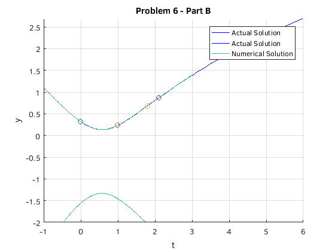

Problem Set B
Joseph Michael Martinsen
Math 308-510
Michael Pilant
Contents
Problem 5
fprintf('Problem 5\n\n') y0= 0.1:0.1:5; % initialising y(0) [t,y] = ode45(@problem05,[0 6],[ y0 ]); hold on; plot(t,y); title('Problem 5') xlabel('t') ylabel('y') hold off;
Problem 5 Warning: Imaginary parts of complex X and/or Y arguments ignored
Problem 6
fprintf('Problem 6\n\n') % Part A fprintf('Part A\n') clear; [pt,py] = ode45(@problem06,[1.5 6],[ .5 ]); [pt1,py1] = ode45(@problem06,[1.5 0],[ .5 ]); sol = ode45(@problem06,[1.5 6],[ .5 ]); sol1 = ode45(@problem06,[1.5 0],[ .5 ]); figure; hold on; grid on; plot(pt,py,'b'); plot(pt1, py1, 'b') title('Problem 6 - Part A') xlabel('t') ylabel('y') hold off; a = deval(sol1, 0); b = deval(sol1, 1); c = deval(sol, 1.8); d = deval(sol, 2.1); fprintf('Actual Solutions\n') fprintf(' t \t y\n') fprintf('-----------------\n') fprintf('0\t%.2d\n1\t%.2d\n1.8\t%.2d\n2.1\t%.2d\n\n',a,b,c,d) % Part B syms t y dsolve('Dy = (t - exp(-t))/(y + exp(y))','y(1.5) = .5' ,'t') f = 1/exp(t) - exp(y) + t^2/2 - y^2/2; c = subs(f, [t, y], [1.5, 0.5]); figure; hold on; grid on; plot(pt,py,'b'); plot(pt1, py1, 'b') ezplot(f-c, [-1, 3, -2, 2]) title('Problem 6 - Part B') xlabel('t') ylabel('y') legend('show') legend('Actual Solution', 'Actual Solution', 'Numerical Solution') fprintf('Numerical Solutions\n') fprintf(' t \t y\n') fprintf('-----------------\n') for j = [0, 1, 1.8, 2.1] f1 = @(y) eval(subs(f, t, j) - c); y1 = fzero(f1, 0.5); fprintf('%.1d\t%.2d\n',j, double(y1)) plot(j, double(y1), 'o') end fprintf('\nThe Actual and Numerical solutions are the same when rounded to 3 digits.\n\n') hold off % Part C fprintf('Part C\n\n') figure; hold on; grid on; ezplot(f-c, [1.5, 10000, -2, 100]) title('Problem 6 - Part C') xlabel('t') ylabel('y') fprintf('From looking at the graph, as t approaches inf, y approaches infinity\n\n')
Problem 6 Part A Actual Solutions t y ----------------- 0 3.18e-01 1 2.36e-01 1.8 6.82e-01 2.1 8.66e-01 Warning: Explicit solution could not be found; implicit solution returned. ans = solve(2*exp(y) + y^2 == 2*exp(-t) + 2*exp(1/2) - 2*exp(-3/2) + t^2 - 2, y) Numerical Solutions t y ----------------- 0 3.18e-01 1 2.36e-01 1.8e+00 6.82e-01 2.1e+00 8.66e-01 The Actual and Numerical solutions are the same when rounded to 3 digits. Part C From looking at the graph, as t approaches inf, y approaches infinity
Problem 8
fprintf('Problem 8\n\n') clear; % Part A fprintf('Part A\n\n Using dsolve, the solution is below') dsolve('Dy = exp(-t^2)', 't') % Part B syms t x diff(erf(t),x) help erf % Part C c = [ 0 1 10.5]; erf(c) ezplot(erf(x), [-10 10]) % Part D limit(erf(t),t,inf) int(exp(-t^2),-inf,inf) % Part E dsolve('Dy = 1 - 2*t*y','y(0)=0','t')
Problem 8
Part A
Using dsolve, the solution is below
ans =
C5 + (pi^(1/2)*erf(t))/2
ans =
0
ERF Error function.
Y = ERF(X) is the error function for each element of X. X must be
real. The error function is defined as:
erf(x) = 2/sqrt(pi) * integral from 0 to x of exp(-t^2) dt.
See also ERFC, ERFCX, ERFINV, ERFCINV.
Reference page in Doc Center
doc erf
Other functions named erf
codistributed/erf gpuArray/erf sym/erf
ans =
0 0.8427 1.0000
ans =
1
ans =
pi^(1/2)
ans =
(pi^(1/2)*exp(-t^2)*erfi(t))/2
Problem 17
clear; format long options = odeset('AbsTol', 1e-10, 'RelTol', 1e-10); sol = ode45(@problem17,[0 6],[ 0 ], options); t = 0.1:0.1:1; Ode45Solutions = deval(sol, t); erfFunc = erf(t); t = t'; digits(10) Ode45Solutions = double(vpa(Ode45Solutions))'; erfFunc = double(vpa(erfFunc))'; T = table(t, Ode45Solutions ,erfFunc)
T =
t Ode45Solutions erfFunc
___ ______________ ____________
0.1 0.1124629162 0.112462916
0.2 0.2227025894 0.2227025892
0.3 0.3286267596 0.3286267595
0.4 0.4283923552 0.428392355
0.5 0.5204998778 0.5204998778
0.6 0.6038560909 0.6038560908
0.7 0.6778011937 0.6778011938
0.8 0.7421009648 0.7421009647
0.9 0.7969082126 0.7969082124
1 0.8427007932 0.8427007929